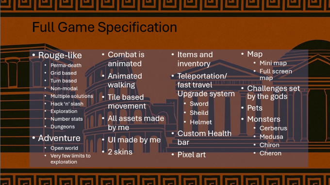
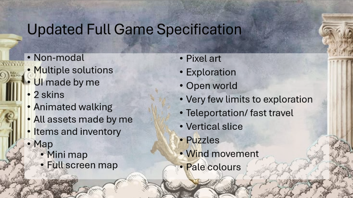

|
My portfolio |
|---|
Another world - Aeolus' Palace |
||
|
 My A2 Creative Project was an open-ended brief to create a game in Unity that was set in another world. The deliverables were a document detailing my process, a short video pitch for my game and a playable vertical slice. Inspired by a game one of my classmates made I decided I wanted to make a rougelike. This was because I wanted a game that was technically challenging that could be made in 2D Unity. A rougelike usually contains procedural generation and this could be mixed in with an open world map for an interesting player experience. Unfortunately, I decided this before we were given the brief and at the time we were strongly guided in how to make our game. The games I researched on instruction from our lectures further strengthened my wish to make a rouge-like as they seemed unengaging due to low or no stakes and no clear goal or story. To raise the stakes I intended to give a clear goal and possibly something to create a sense of urgency. I began planning both story and mechanics before doing client research. After completing client research, I realised that the game I had been planning would not be suitable for the client. We had been given the real studio cyan worlds as a client. Looking into their projects I found they made digital story books and more recently puzzle games. Cyan worlds’ best-known project is Myst and many of their other game are continuations of that story. Using these games to guide me I created an audience persona and three rules that I could use to guide me for the rest of the project My rules were: to use through world building, don’t include violence or mature content, and I must include puzzles. Because my original idea broke one of the rules with one of its fundamental mechanics. To respond I went back to idea generation, and I came up with 3 different ideas that would fit the brief. Once I had picked which I was going to continue with, I created a more detailed overview. And researched relevant information and interesting features this research was more focused and useful. However, I still made sure to give the player a clear objective. One of the things I researched was Epic: the musical specifically the Storm Saga. I analysed how Aeolus is portrayed: Plot – the storm saga follows Odysseus after escaping polyphemus’ island before he finds Circe’s island while on the run from Poseidon. Aeolus – This saga includes Aeolus as a trickster god that is ever changing but supportive of Odysseus’s journey. Aeolus seems to exploit the distrust between Odysseus and his crew. His crew appears to see the selfishness of Odysseus, or project their own selfishness on to him, when Aeolus’s minions suggest that the wind bag contains treasure not the winds that Odysseus claims it contains. The distrust allows Aeolus to manufacture conflict. Conclusion – I would like to use this as my main reference for Aeolus as a character as it not only shaped my Idea of Aeolus as a character but also lends itself well to the puzzles I’d like to create in my game. Epic portrays Aeolus as a kind but dangerous force of nature that will aid anyone who asks for assistance no matter their motives and will manipulate people and create inner conflict or conflict between people in a group.  Using my research and overview I created a specification for an entire game. After establishing what I wanted in the game I prioritzed what would both be reasonable for the time constraints and would give a clear idea of what the full game would be like. I used this to create a to do list to create my vertical slice on trello. I had a lot of coding as it is what I enjoy most about game development I started by making a 2D vector based movement script using a rigid body at the beginning it was extremely inefficent so before moving on I made it more concise however in doing so I accidentally swaped the X and Y inputs it the code. to make the wind movement script make two versions. Version 1 uses a similar method to my movement script – applying a linear velocity to the rigidbody. This had a few issues though: I hadn’t collected the parachute handler, I had a while loop in the update function, and it overshot the destination, but other than that it was perfect. So, I decided to try writing another version based off a script I wrote in a previous project. This version used lerp to move the player to the destination. However I did not understand how to use lerp properly and this meant I applied the lerp function wrong in my code create logic errors and me atributing a rendering bug to the lerp function. Using fixed update instead of update and using a coroutine to move the player to the destination fixed the issues I was having. The misidentified rendering issue I had attributed to the rigidbody colliding with the trigger as I had turned off the trigger property this may have caused other issues I had not noticed. However, fixing it did not fix the rendering issue. So, I just adjusted timings to give the player time to get out of the trigger and make the speed about the same across the two instances which travel two very different distances. the next thing I did was the conversation between Aeolus and the player. If it was going to be branching like I wanted it would need something to track decisions. And so came in the menu manager script a simple script to hold all code for the interactions with UI the part that the speech uses is 3 lines that create a variable and function and use the function to set the variable to a value saved on another script attached to the object calling the function. However, I did not have the time or narrative recourses to make a branching conversation so I made a simple linear conversation. This meant I needed to rework the code. after attempting to rework it to not branch it wouldn’t enter play mode for some reason. And I decided to use buttons to activate and deactivate panels of speech which was far simpler and yet I still managed to mess this up. I used local variables which come to find out unity inspector was only displaying one of the two local variables in the button menu. This was a simple fix because I just split the function in two: one for activating the next panel, and one to deactivate the current panel. A core mechanic I left until the very end to code was placing and picking up items. I started with placing items down. The first step to this was finding out which item is going to be placed so I used a variable in the inventory script for the script to know which item and then it saved the item and sprite and nulled it in the inventory and set the held item to no item. I originally intended that items are returned to the same slot and so I didn’t remove the sprite from the list, but I didn’t save the index of the saved item and thought it would look more polished if I made the items move up in the inventory when you placed an item so edited the code to null the sprite while coding the auto sort for the inventory. I then added picking up items as I did this, I restructured the code using nested if statements instead of multiple logic gates. I wrote the code knowing there are more item slots and so didn’t worry about writing a check for an error state where the inventory was full. Using a for loop the script checks all the item slots and assigns the first one to the details of the item held by the script. I decided to add an auto sorting script to the inventory. This turned out to create a lot of bugs as I had to adjust three scripts at once, and this caused horrendous issues as the scripts were not individually debugged. A logic error in one of the scripts caused multiple compiler errors as, instead of nullifying one item in a central list it was nullifying the entire list, this meant that a script that was trying to access the list couldn’t find any items and was failing because of it. The error was on another script and was therefore harder to identify the problem. Once I had identified the problem, I could add the missing index so only the intended item in the list is nullified. |